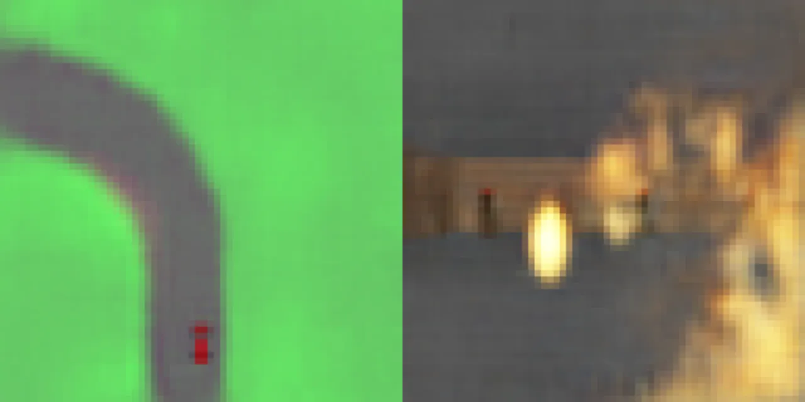
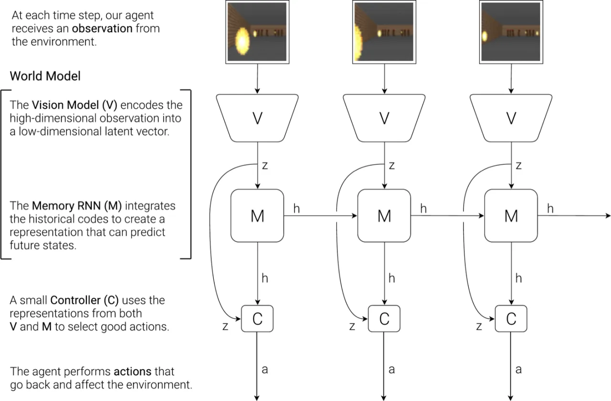
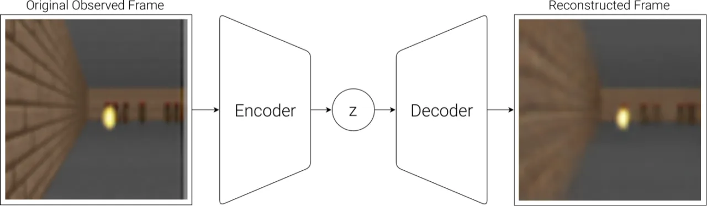
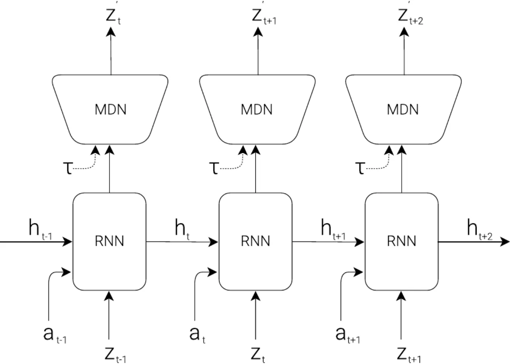
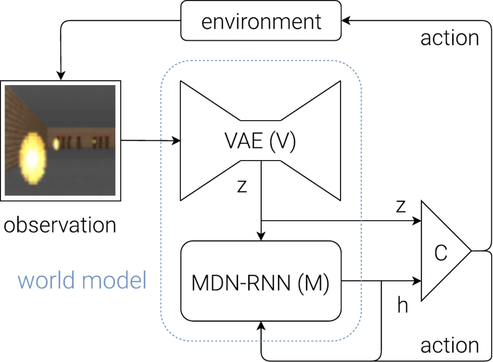
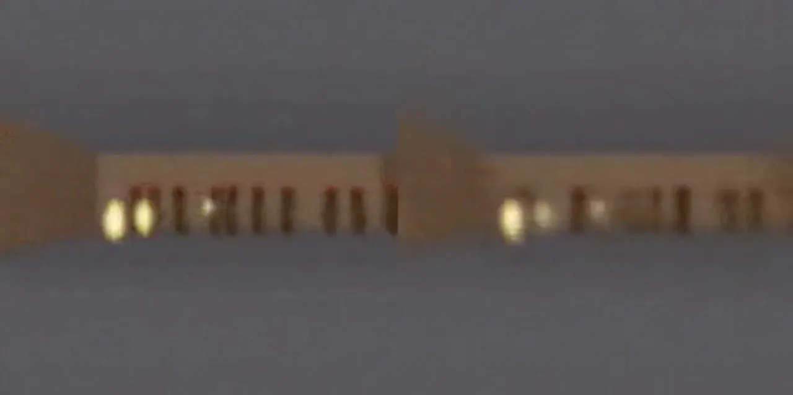

本文提出将智能体分解为感知（VAE）、记忆（MDN-RNN）与控制（CMA-ES 线性层）三个模块。
世界模型在无监督条件下快速学习环境的压缩时空表示；控制器则可完全在世界模型生成的"梦境"中训练，
再将策略迁移回真实环境，首次在 CarRacing-v0 和 VizDoom: Take Cover 两个任务上达到 SOTA。
现实中的 model-free 强化学习方法通常只使用参数量较少的小型网络， 因为信用分配问题（credit assignment problem）使得在百万参数量的大模型上进行直接 RL 训练极为困难。 人类依靠内部"心理模型"（mental model）做出快速决策，无需在脑中显式规划所有未来情景—— 本文受此启发，构建能预测未来的世界模型，并以此为"舞台"训练极简的控制策略。
"We explore building generative neural network models of popular reinforcement learning environments. Our world model can be trained quickly in an unsupervised manner to learn a compressed spatial and temporal representation of the environment. By using features extracted from the world model as inputs to an agent, we can train a very compact and simple policy that can solve the required task. We can even train our agent entirely inside of its own hallucinated dream generated by its world model, and transfer this policy back into the actual environment."

智能体由三个模块组成：V（VAE）将每帧图像压缩为低维隐向量 z； M（MDN-RNN）对未来 z 建立概率预测模型； C（Controller）是一个只有数百参数的线性层，以 [z, h] 为输入直接映射到动作。 V 和 M 在无监督条件下训练，C 则用进化策略（CMA-ES）优化，互不干扰信用分配。

环境每步给出高维像素观测，V 模型的任务是将 64×64 RGB 图像编码为低维隐向量 z。 使用卷积 VAE（4 层卷积 + 4 层反卷积），在 CarRacing 中 Nz=32， 在 VizDoom 中 Nz=64。VAE 的 Gaussian prior 不仅限制了信息容量， 也使得 M 模型生成的"想象帧"更具鲁棒性，不易因输入超出分布而崩溃。

M 模型的目标是对时序动态建模，预测下一帧的隐向量分布： P(zt+1 | at, zt, ht)。 使用 LSTM 作为 RNN 主体，输出层为 Mixture Density Network（混合高斯分布）， 通过调节温度参数 τ 控制采样随机性。MDN 的离散模式（discrete modes）对于 建模具有随机离散事件的环境（如怪物是否发射火球）尤为重要。 在 VizDoom 实验中，M 额外预测 done 信号，使得世界模型成为完整的 RL 环境接口。

控制器是单层线性模型：at = Wc [zt ht] + bc。 CarRacing 中 C 只有 867 个参数，VizDoom 中为 1,088 个。 参数量如此之少，使得进化策略 CMA-ES 能够在多核 CPU 上高效并行搜索最优策略， 完全回避了深度 RL 中的信用分配难题。

VizDoom 实验中，M 被封装为符合 OpenAI Gym 接口的虚拟环境（gym.Env）。
智能体在此"梦境"中完全以隐空间 z 为观测进行训练，无需调用真实游戏引擎。
训练完成后，将策略直接迁移回真实 VizDoom 场景。整个训练流程：
论文在两个环境中验证：CarRacing-v0（连续控制，随机生成赛道）
和 VizDoom: Take Cover（躲避火球，生存时间越长越好）。
两个环境均从 10,000 条随机 rollout 出发，无需人工设计特征或奖励塑形。
任务定义为平均分 ≥ 900（100 次连续试验）即视为 "solved"。V 模型在不含奖励信息的情况下训练， M 模型仅做帧预测，仅 C 接触奖励信号。结果表明，仅使用 V 时得分 632±251，加入 M 后升至 906±21， 首次在公开结果中"解决"该任务。
| 方法 | 平均得分 |
|---|---|
| DQN | 343 ± 18 |
| A3C (continuous) | 591 ± 45 |
| A3C (discrete) | 652 ± 10 |
| ceobillionaire (Gym Leaderboard) | 838 ± 11 |
| V model only | 632 ± 251 |
| V model + hidden layer | 788 ± 141 |
| Full World Model (V + M + C) | 906 ± 21 |
任务要求智能体在 2100 步内尽量存活，得分超过 750 视为通过。 关键消融：温度参数 τ 控制虚拟环境随机性。低温（τ=0.1/0.5）导致模式坍塌， 怪物永不发射火球，策略在真实环境中几乎失效（得分 ~196）； τ=1.15 获得最佳迁移效果（实际得分 1092±556）；τ 过高（1.30）则梦境过难，学习效果下降。
| 温度 τ | 梦境得分（Virtual） | 真实得分（Actual） |
|---|---|---|
| 0.10 | 2086 ± 140 | 193 ± 58 |
| 0.50 | 2060 ± 277 | 196 ± 50 |
| 1.00 | 1145 ± 690 | 868 ± 511 |
| 1.15 | 918 ± 546 | 1092 ± 556 |
| 1.30 | 732 ± 269 | 753 ± 139 |
| Random Policy | N/A | 210 ± 108 |
| Gym Leaderboard Best | N/A | 820 ± 58 |

世界模型（V + M）承载了绝大部分复杂度，而 Controller 刻意保持极简以便 CMA-ES 优化。 CarRacing 中三者参数量如下：
| 模块 | CarRacing 参数量 | VizDoom 参数量 |
|---|---|---|
| VAE (V) | 4,348,547 | 4,446,915 |
| MDN-RNN (M) | 422,368 | 1,678,785 |
| Controller (C) | 867 | 1,088 |
由于世界模型只是真实环境的近似，Controller 可以发现"漏洞"： 在 VizDoom 实验初期，智能体学会了一种对抗性策略，移动方式使怪物在整个 rollout 过程中从不发射火球，在虚拟环境中得分极高，但在真实环境中完全失效。 论文通过提高温度参数 τ 缓解此问题，但并未根本解决。
VAE 在无监督条件下训练，无法知晓哪些特征对任务重要。 论文指出："it reproduced unimportant detailed brick tile patterns on the side walls in the Doom environment, but failed to reproduce task-relevant tiles on the road in the Car Racing environment." 将 VAE 与奖励预测联合训练或许有助于对焦任务相关区域，但代价是失去跨任务复用能力。
LSTM-based 世界模型的权重存储容量有限，无法随数据量线性扩展。 作者指出可能需要引入更大容量模型（Mixture of Experts、Hypernetworks 等） 或外部记忆模块来应对更复杂的环境，同时也面临传统神经网络的灾难性遗忘问题。
当前方法逐步模拟未来（step-by-step），未能实现人类式的层次化规划与抽象推理。 论文承认这一点，并指向 Learning to Think 框架作为更通用但未在此实现的方向。